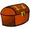
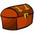

|
|


You start off with 5 fighters. Before starting the game, check the stats of your army, which should look something like the one shown below.  In particular, the Moehog's and Techo's attack strength should at least be 8 and 9 respectively. If the stats are weak, just delete your troops until you are satisfied. Name your fighters so that you can distinguish them from any converted invaders later. In each battle, the converted invaders form part of your troops. However, you have to discard all but 5 fighters before you continue with the next battle. It is recommended that you keep the original 5 that you started with as they would have accumulated saves and items in each battle. |
You can make up to 5 moves per turn. You can either use each move for a different fighter, or several moves for one or more fighters. However, each species can only move a certain number of times per turn (unless they are equipped with certain items). As shown in the legend on the gameboard, you can make up to 4 moves per turn for the Moehog, 2 moves per turn for the Techo, Scorchio and Grundo, and once per turn for the Skeith. |
(Note: First Wave refers to Mission 1-5 and Second Wave refers to Mission 6-10) Health The maximum health of each fighter is 18 in the First Wave and 21 in the Second Wave. If the health of a fighter is zero or less, it will be converted to an invader and will attack your other fighters. Note that even if you convert it back later, it will not regain any bonuses or items or saves that it has accumulated in earlier battles. Similarly, an invader will be converted and becomes one of your fighters when its health is zero or less (An exception is the Invader Buzz, which just leaves behind a smoking crater Attack Strength Each fighter can have a maximum base attack strength of 18 in the First Wave and 19 in the Second Wave. Attack strength affects the chances of hitting an opponent as well as the damage done to the opponent (this will be explained in more detail later). The table below shows the bonuses for different levels of attack strength.
In addition, if a fighter obtains an attack item, it will give the fighter an attack bonus on top of the bonuses mentioned above. (Refer to the section on Items for more details) Defence Strength The maximum base defence strength of each fighter is 14 for both Waves. Defence strength affects how well a fighter can avoid damage when attacked. Unlike bonuses for attack strength, defence bonuses come entirely from the defence items obtained by a fighter. |
Items can be found in each battle and you just have to move any fighter onto an item to acquire it. However, as each fighter can only hold 1 attack item and 1 defence item, it will drop the current item that it is holding and obtain the new item instead. All potions are consumed as soon as they are landed on. Do also note that if an invader moves onto a square occupied by an item, that item vanishes but the invader cannot make use of it. Below are the various attack and defence items that you can find in Mission 1-7. Certain items are "specialized" for certain species so extra bonuses will be given to the particular species that hold these items.
|
Hopefully the following information will help you in predicting what the invaders might do next. Moves The invaders will move in a straight line towards your fighters and villages unless there is a mountain in their path, in which case they will move diagonally around it. When an invader reaches a square adjacent to a fighter, it will stop moving and attack the fighter, unless there is also a village adjacent to the invader. In this case, the invader will choose to sack the village first and the only way to stop the invader from doing so is to convert it by the end of your turn. Attacks The table below shows the priority of an invader when attacking a fighter. The invader (I) will attack the fighter in a square with the lowest number.
Occasionally, an invader might have an alternative attacking priority as shown in the table below.
Thus, if a fighter is in danger of being converted, you can either move that fighter away so that it is not adjacent to an invader, or you can move another fighter to a square with a lower number so that the invader will attack it instead. |
You can calculate the amount of damage a fighter can do to an invader using the following equation: where Roll is a random number between 1-20. For example, let's assume that a Skeith has an attack strength of 18 with no attack items and it hits an invader with a defence strength of 8. If the roll is 19, the amount of damage done to the invader will be 4 â� 0 â� 19 - 8 = 15. So if the health of an invader is 15 or less, it will be converted. On the other hand, if the roll is 3, the amount of damage done to the invader will be 4 â� 0 â� 3 - 8 = -1. In this case, no damage will be done to the invader. Similarly, you can try to work out the maximum damage that an invader can do to your fighter by assuming that the invader will roll a 20. If we assume that the Skeith in the above example has a defence strength of 9 and the invader has an attack strength of 9, the maximum amount of damage that can be done to the Skeith will be 1 â� 0 â� 20 - 9 = 12 (note that invaders have no weapon bonuses). Of course the invaders will not always roll 20s but the above would help in calculating the probability of your fighters being converted. |
All fighters start with the rank of Villager. If a fighter convert an invader, it is known as a save. When a fighter has accumulated a certain number of saves, it will be promoted to the next rank as shown in the table below.
When a fighter is promoted to the next rank, its attack and defence strength will increase by 1 point. However, once a fighter is promoted in a particular Battle, any saves made by that fighter during other Battles in the same Mission will not accumulate. In effect, each fighter can only be promoted once per Mission. |
     Lost Items
Lost Items
    A "Lost Item" appears in every Mission and will exist for 3 Battles. If you recover it in the first Battle, it won't appear in the next two Battles. If you don't recover it in the first Battle, it will appear in the second Battle, and failing that, the third Battle. However, if you haven't recovered it by the end of the third Battle, it is lost forever but a different "Lost Item" will appear for the next Mission. There are no penalties for failing to recover a "Lost Item", but recovering it will boost the base attack and defence strength of all your fighters by 1 point (up to the maximum levels). However, note that if you lose a Battle, you would have to restart the Mission and the boost from the "Lost Item" for that Mission will be lost. Furthermore, once you recover a "Lost Item", it is saved forever and will never reappear, no matter how many times you restart the Mission. To summarize, you should only recover a "Lost Item" only if you are confident of completing the Mission. But do remember to recover the "Lost Items" while there are at least 2 invaders on the board, as it will disappear for the rest of the Battle when only 1 invader is left. |
Note: The following is just what I would normally do in each Mission. You can either choose to follow it or use your own strategy. The items shown in the examples may also differ from those in your game. |
 The above shows an example of a Battle in Mission 1. Move each of your 5 fighters in turn to Row 6, where Row 1 is the first row from the top. As the mountains are in the way of the Techo, move it between Invader 01 and 02 as shown below, so that you can stop the third invader from advancing and won't waste a potion.  As mentioned before, if you are confident of completing the Mission, get the "Lost Item" when there are 2 invaders left on the board. In addition, when there's only 1 invader left, don't be in a hurry to convert it unless all your fighters are in danger of being converted by the invader instead. Move your fighters to get any weapons that are still lying around. Recommendations for Mission 1:
|
 In this Mission, Invader 05 is positioned much nearer to your villages from the start. There should be 2 Amulets of Teleportation  lying around
but if none of them are within 2 spaces of your Skeith, you can either
move your Techo 2 spaces per turn to stop the invader from advancing, or
keep clicking "End Turn Now" so that your villages will be
sacked and you can restart the Mission. Teleport your Skeith to Row 6 once
it gets an Amulet and start attacking Invader 06 when it is adjacent to
your Skeith, while moving your other fighters up to Row 6 as well. lying around
but if none of them are within 2 spaces of your Skeith, you can either
move your Techo 2 spaces per turn to stop the invader from advancing, or
keep clicking "End Turn Now" so that your villages will be
sacked and you can restart the Mission. Teleport your Skeith to Row 6 once
it gets an Amulet and start attacking Invader 06 when it is adjacent to
your Skeith, while moving your other fighters up to Row 6 as well.
Recommendations for Mission 2:
|
As usual, teleport your Skeith to Row 6 to stop Invaders 05 and 06 from advancing. If your Scorchio has been promoted to the rank of Soldier and has a bow from the previous Mission, it can now attack invaders from 2 spaces away. Move your Scorchio to the middle of Row 6 (that would be the space below a mountain and between the 2 potions in the above example) so that it can attack most of the invaders. At the same time, move your Grundo to get the Magic Force Spell as soon as possible, while moving your Moehog and Techo up to Row 6 as well. When your Grundo gets a Magic Force Spell, it can heal your other fighters if both have an available move. Unfortunately, it is unable to heal itself so move it away if any invaders are attacking it. You should always have healing as your first priority, since your fighters won't be converted if their health are restored. From Battle 2 onwards_ your Grundo need not be moved as its main task is to heal your other fighters. This will in turn free up a move for the other fighters to move up to Row 6 more quickly. Recommendations for Mission 3:
|
 Teleport your Skeith to Row 6 to stop Invaders 05 and 06 from advancing. Move your Scorchio to the middle of Row 6 (onto the Plate Armour), your Techo diagonally up to Row 6 (onto the square between the 2 Magic Force Spells), and your Moehog to Row 6 (onto the square below the mountain). Use your Scorchio and Techo as your main fighters and your Grundo to heal when necessary. Recommendations for Mission 4:
|
 The above shows an example of Mission 5 after 2 rounds. It is actually similar to Mission 4, except all the invaders are now Grundos instead of Scorchios. Just follow the same strategy used in Mission 4. However, before you convert the last invader, it is necessary to equip your Moehog with the Counter Enchantment Helmet  if you are going to continue with Mission 6.
if you are going to continue with Mission 6.
Recommendations for Mission 5:
|
 Teleport your Skeith to Row 6 to stop Invaders 05 and 06 from advancing. Since there is a Sword of Deflection  in the middle of Row 6, move your Techo onto it to equip it, while moving your
Moehog and Scorchio up to Row 6 as well. Concentrate on converting the invader
Moehogs first as the invader Buzzes have a defence of 25 and are really tedious to convert.
in the middle of Row 6, move your Techo onto it to equip it, while moving your
Moehog and Scorchio up to Row 6 as well. Concentrate on converting the invader
Moehogs first as the invader Buzzes have a defence of 25 and are really tedious to convert.
Your Moehog should have been equipped with the Counter Enchantment Helmet from the previous Mission, so if your Grundo is being enchanted and you need it to heal the other fighters, just click on your Moehog then on your Grundo to break the enchantment. Similarly, it is not necessary for your Techo to break the enchantment for your Skeith unless your Skeith needs to be teleported to another square. However, do remember to break all enchantments on your Grundo and Skeith before converting the last invader, as the enchantments will be carried forward to the next Battle/Mission and you would have to waste a turn to break these enchantments in the new Battle/Mission. |